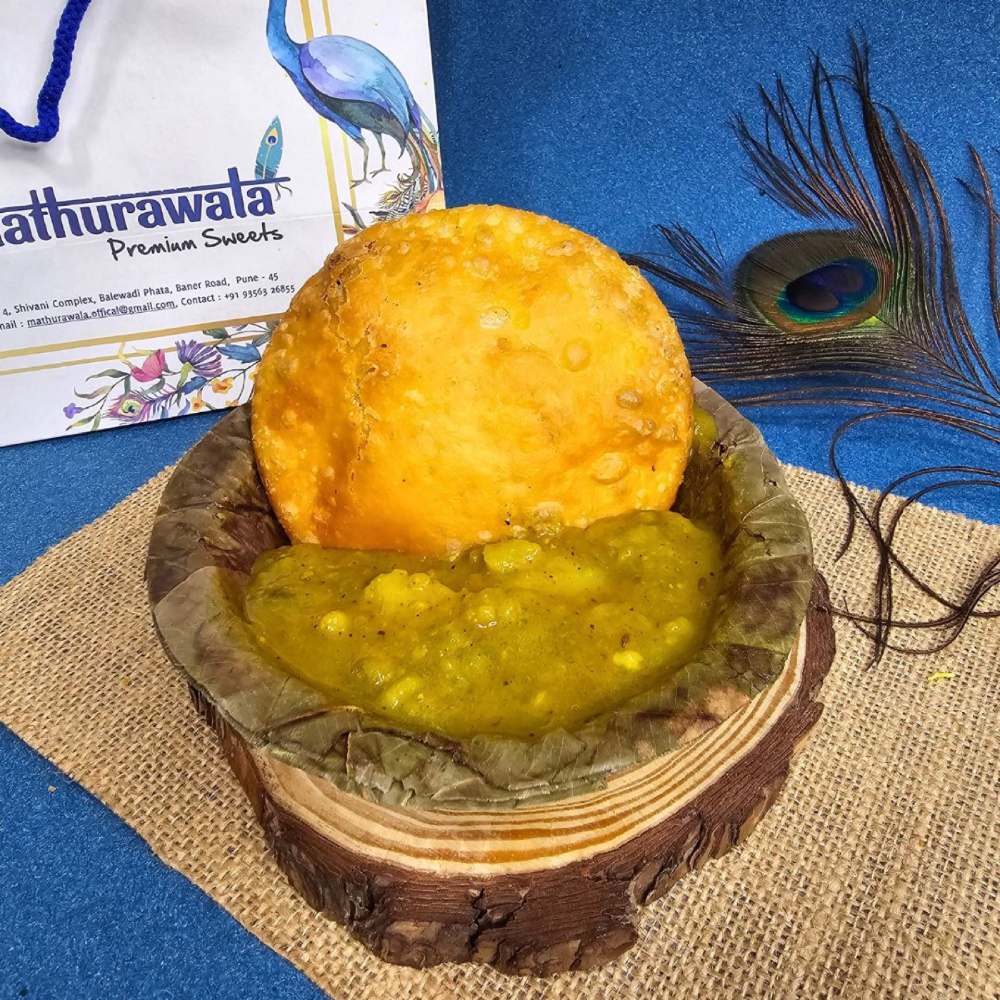
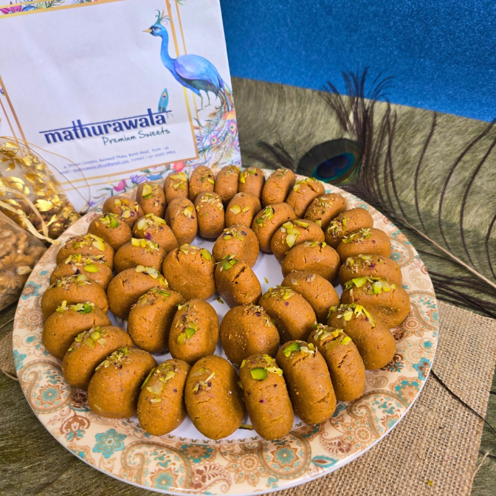

Monsoon. Mithai. Guru Purnima. Counter pride. Four fresh angles.
Drop 07 leans into the July monsoon season and a key gifting moment: Guru Purnima (July 10). Four posts, four distinct angles: the kachori that tastes best in the rain, the peda that belongs at every Guru Purnima table, Kesar Rabdi as the counter's quiet winner, and a Rasmalai that answers the monsoon-sweet craving. All captions copy-paste ready. Plus a Reel script for monsoon-counter energy.
How to use: captions are copy-paste ready. Right-click any poster image to save to phone. Post from @mathurawalaofficial at peak times listed. Verify each item is live on PetPooja before posting.
Menu note: Indori Poha is NOT on the menu. Lassi and Dahi Bhalla are ALL-DAY items. Guru Purnima 2026 = July 10 (Fri). Always verify items and prices on PetPooja before posting.
The four posts
Posts 23-26 — Weeks 13-14

Week 13 · Mon Jun 30 · 9 AMPhoto post
Post 23 — "Baarish mein kachori"
Monsoon hook. Baner is a tech-worker area and the IT crowd is back at office post-monsoon. Rain + hot fried food is a universal Indian craving. Lean into it.
Baarish shuru ho gayi.
Aur pehli cheez jo yaad aati hai?
Ek plate hot kachori sabji.
Crisp, puffed, hing ki khushboo.
Garm aloo-tamatar sabji on the side.
₹35. Asli wala.
Baner mein. Mathurawala.
Subah 9 baje se, baarish ho ya dhoop.
Khao toh asli khao. Radhe Radhe 🦚
#monsoon #kachorisabji #kachori #baarish #punefood #baner #mathurawala #brajfood #mathura #asliswaad #punefoodlovers
#monsoon #kachorisabji #baarish #punefood #baner

Week 13 · Wed Jul 2 · 6 PMPhoto post
Post 24 — "Guru Purnima ka peda"
Guru Purnima is July 10. Start building early awareness from July 2. Mathura Peda is the Guru Purnima sweet of record — it's given as prasad across temples including ISKCON. Own this occasion before it passes.
Guru Purnima aa rahi hai. Jul 10.
Aur Guru ko jo bhog lagao,
woh sirf Mathura ka ho sakta hai.
Mathura Peda.
Real khoya. Asli recipe.
Jis tarah Mathura mein banaya jata hai,
usi tarah Baner mein.
Dene ke liye. Prasad ke liye.
Ya bas apne liye.
Mathurawala, Baner, Pune.
Radhe Radhe 🙏 Khao toh asli khao.
#gurupurnima #mathurapeda #peda #mithai #mathurawala #punefood #baner #brajfood #mathura #prasad #gifting
Guru Purnima evening, July 10. Go with a mithai that feels like an offering. Kesar Rabdi is slow-reduced milk with real kesar, the kind of thing only made-live kitchens can pull off. No restaurant chain does this properly.
Guru Purnima ki shaam.
Kesar rabdi.
Slow-reduced real milk. Asli kesar.
Har bowl banta hai counter par,
jab aap order karte ho.
Koi tin nahi. Koi readymade nahi.
Sirf asli.
Aaj woh mithai khaiye
jo Mathura mein banti hai.
Mathurawala, Baner, Pune.
Radhe Radhe 🙏 Khao toh asli khao.
#kesarrabdi #rabdi #gurupurnima #mithai #mathurawala #punefood #baner #brajfood #mathura #asliswaad #madelive
Sunday July 12. The monsoon is settled in, families are visiting. Rasmalai is a crowd-pleaser that photographs beautifully. Frame it as the made-live answer to the seasonal sweet craving.
July ki baarish ka meetha jawab.
Kesar rasmalai.
Soft, soaked, saffron-gold.
Real milk. Real khoya. Made in our kitchen.
Koi pack nahi. Koi frozen nahi.
Counter se seedha.
Sunday ko family aaye,
toh asli meetha lao.
Mathurawala, Baner, Pune.
Khao toh asli khao. Radhe Radhe 🦚
#rasmalai #mithai #monsoon #sunday #punefood #baner #mathurawala #brajfood #mathura #asliswaad #sweets #madelive
Reel: "Counter mein baarish ka swaad" (30-45 seconds)
Monsoon at the counter. Film during rain, or simulate with wet street / steam context. This is a sensory Reel, not informational. Trending audio: something lo-fi/moody or a monsoon-ambient track.
Shot 1 (0-3s): Close-up of kachori hitting hot oil. Sizzle sound. Hook text overlay: "Baarish wali subah ka dose."
Shot 2 (3-8s): Kachori puffing and browning in oil. Slow-mo if possible. Overlay: "₹35."
Shot 3 (8-14s): Plating. The sabji being scooped over, steam rising. Overlay: "Made live. Every morning."
Shot 4 (14-20s): First bite or dunk. Real customer reaction or Ketan bite. "Khao toh asli khao."
Shot 5 (20-26s): Counter/outlet B-roll or the queue. Overlay: "Mathurawala, Baner."
Shot 6 (26-30s): Logo card or product-in-hand close. Overlay: "Subah 9 baje se. Baarish ho ya dhoop."
Caption for the Reel:
Baarish wali subah. Counter par kachori ki khushboo. Aao. ₹35 mein Mathura. Mathurawala, Baner. Khao toh asli khao. Radhe Radhe 🦚 #monsoon #kachori #reels #punefood #baner #mathurawala #brajfood #asliswaad
14-day Calendar
Weeks 13-14 · June 29 — July 12
Day
Date
What to post
Format
Time
Mon
Jun 30
Post 23: "Baarish mein kachori" (kachori sabji, monsoon hook)
Photo
9 AM
Tue
Jul 1
Stories: reshare any customer review Reel / story mention
Story
7 PM
Wed
Jul 2
Post 24: "Guru Purnima ka peda" (peda gifting, Jul 10 awareness)
Photo
6 PM
Thu
Jul 3
Stories: BTS counter clip or quick plating video
Story / Reel
12 PM
Fri
Jul 4
GBP post: "Guru Purnima special — Mathura Peda, gift the original"
GBP Text
9 AM
Sat
Jul 5
Stories: monsoon counter shots, steam + kachori
Story
6 PM
Sun
Jul 6
Rest / reshare a past post to Stories
Story
11 AM
Mon
Jul 7
Post "Counter mein baarish ka swaad" Reel (film over the weekend)
Reel
9 AM
Tue
Jul 8
Stories: Guru Purnima reminder ("2 din mein aao, peda lo")